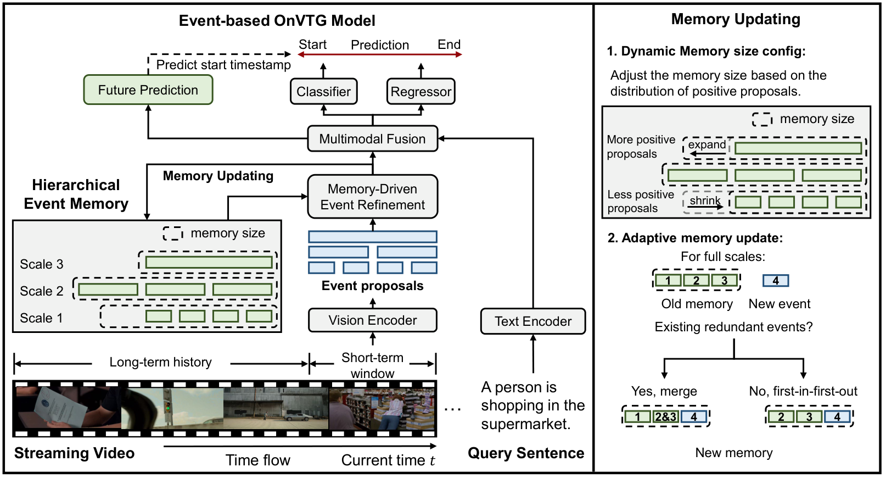

可以把「帧队列 → 多尺度事件 proposal → 分层预算记忆」这条写入链直接搬进 VLA 历史模块；代价是整套 proposal 生成与预算分配都要重新用机器人轨迹统计训练，且它的低延迟来自牺牲定位精度。
- 最小可复用件
- 相邻 proposal 两两合并成的尺度树，加
K_i = 1 + (K-L)·w_i/Σw_j的频率预算分配，以及溢出时「先相似合并、再 FIFO」的写入规则。 - 主要风险
- 预算权重
w_i来自数据集里正样本的尺度分布，换成机器人数据后若状态转移集中在单一尺度，其余尺度的槽位会被压到最小值，长期信息实际上存不下来。 - 复现门槛
- 需要带起止时间标注的长视频（TACoS、ActivityNet Captions、MAD）与逐帧视觉特征；单卡可训，参数量 36.2M，论文报告 614.5 FPS 推理。
1. 核心摘要
Online Video Temporal Grounding（OnVTG）要求在看不到未来帧的条件下，随视频流推进尽早给出文本 query 所指向事件的起止时间。已有在线模型把最近若干帧的特征存进 memory，再逐帧判断「当前帧是否是起点或终点」，这种表示既没有事件结构，也留不住长期信息。本文把记忆单位从帧换成事件 proposal：在长度为 8 帧的短窗口上用 1-D 卷积生成最小尺度 proposal，相邻 proposal 逐级合并成 8 个尺度的线段树，按各尺度正样本频率分配共 64 个记忆槽位；query 到达时用 Transformer decoder 对候选分类并回归边界。另设 future prediction 分支预测目标是否将在 [t-4, t+4] 帧内开始并回归起点，把起点预测从「事件结束后」提前到「事件开始前」。判定：写入路径与预算规则可复用，低延迟分支只能当预取信号用。
2. 事件流水线定位
该工作的主战场是记忆写入与长期维护：决定哪些事件进入历史、每个尺度留多少、旧条目何时被合并或淘汰。检索标为 part，是因为它也提供了 query 到达后的完整读取流程——对当前窗口 proposal 与历史事件一起分类、回归边界——但检索只在有 query 时发生，写入本身不依赖 query。上游假设是已按固定帧率抽好的视觉特征；下游交出的是起止时间戳，不产出动作，也不改变策略。
| 环节 | 内容 |
|---|---|
| 输入 | 流式视频帧特征 v_i、文本 query、时刻 t；短窗口为 [t-7, t]。 |
| 输出 | 每个 proposal 的正负判定、起止偏移；开启 FP 时额外输出「未来窗口内是否开始」与预测起点。 |
| 交给下游 | 事件级记忆条目（含持续时间与尺度），供后续 query 直接在历史上检索，而不必回看原始帧。 |
3. 问题与动机
帧级 memory 的失效是结构性的：固定存 K 帧特征只能覆盖 K 帧历史，更长的事件在内存里拼不出完整片段；而事件时长从几秒到数十秒不等。逐帧二分类把一个事件压成两个瞬时点，表达不了长事件包含子段，也无法把子段归到父事件。写入策略同样粗糙：先进先出在视频流上会把槽位交给大量高度重复的静止片段，作者指出纯 FIFO 会让 memory 被冗余内容填满。
延迟问题来自另一侧。用 proposal 同时回归起点和终点，必须等事件结束、proposal 覆盖完整区间后才能定位起点；论文在 TACoS 上不加 future prediction 时起点偏差为 22.38 秒，等于事件结束后才「追溯」出开始时刻。要真在线，必须在事件尚未开始时就说「马上开始、起点在 t+Δ」。
4. 方法拆解

原论文方法图，由作者 LaTeX 源码渲染，原图 PDF 见 figures/method-original.pdf。左侧为事件模型：短窗口 proposal、分层事件记忆、记忆驱动的 proposal 精炼、多模态融合与分类/回归，顶部绿色为 future prediction 分支；右侧为记忆更新流程，上半是按正样本分布扩缩各尺度容量，下半是「合并或 FIFO」的二选一。
4.1 输入与时间表征
记时刻 t 的短窗口为 V = {v_i}, i ∈ [t-L_s+1, t]，L_s = 8。视觉编码器抽特征后，用 1-D 卷积得到第一尺度 proposal 特征 P¹；第 j 尺度的 proposal 时长为 2^j，因此尺度本身就编码了「这段历史有多长」，不必再额外附时间戳。TACoS 与 ActivityNet Captions 用 C3D 特征，MAD 用 CLIP 特征。
4.2 关键机制
从帧队列到多尺度事件。 相邻两个小尺度 proposal 拼接后过 MLP 得到上一级：p^{j+1}_i = MLP([p^j_{2i}; p^j_{2i-1}])，共 L = 8 个尺度，构成线段树。当某尺度时长超过短窗口（如尺度 3、4），公式里的另一半改为取 memory 中该尺度最近的历史事件，于是当前 proposal 天然跨过窗口边界，接到过去。
粒度与合并规则。 小尺度对应单帧级位移，大尺度对应数秒到数十秒的行为段；合并只发生在相邻同级 proposal 之间，不做全局聚类，因此每个记忆条目始终对应一段连续时间，可回溯到原始区间。
近期细、远期粗的分配。 总容量 K = 64，先给每个尺度 1 个槽位保证可检索，剩余按该尺度正样本频率 w_i 分配：K_i = 1 + (K-L)·w_i / Σ_j w_j。频率高的尺度拿更多槽位，长事件靠少量粗粒度条目维持；分配由数据决定，不是手工设定「近处多、远处少」。
写入与淘汰。 某尺度超容时，先算该尺度内相邻事件的余弦相似度；存在大于 δ 的相邻对就用 average pooling 合并，重复直到不超容；若没有可合并的相邻对，再按 FIFO 保留最近 K_i 条。相似度阈值 δ 的具体取值未在已核验的公开材料中确认。
query 到来后的检索与定位。 proposal 先经记忆驱动精炼 P^j = E(P^j; M)，由一个 transformer encoder 层读取同尺度历史：小尺度取近期细节，大尺度取长期粗粒度。文本 query 经文本编码器得到 E_text(Q)，与全部尺度 proposal 一起送入 Transformer decoder：P̂ = D(P, E_text(Q))；随后 MLP 分类判定正 proposal，另一 MLP 回归起止偏移，监督为 focal loss 加 DIoU loss。历史条目不再过视觉编码器，只在 proposal 层面参与注意力，这是低成本跨长时间跨度的原因。
4.3 输出与在线边界
因果性。 是因果的。摘要要求 without observing future frames；短窗口只到 t，跨窗口合并只调用已存事件，没有任何一步回看未来帧。
历史保留与上限。 保留时长不设限——事件记忆贯穿整条流，早期事件只要没被挤出就一直可读；但条目数有硬上限，总容量 64 个事件、8 个尺度、每尺度至少 1 条。所以「记得多久」取决于该尺度的事件密度而非固定秒数，论文未给出各数据集的实际覆盖跨度。
proposal 能否事后改写。 溢出时旧条目会被相邻合并改变内容，属于写入路径上的被动改写；论文未提供对已写事件回溯重定位、拆分或删除的接口，这点未在已核验的公开材料中确认。
低延迟的来源。 两处。其一，proposal 在事件进行中就存在，query 一旦到达即可对已发生部分打分，不必等新事件结束。其二，future prediction 分支以当前 proposal 特征预测目标在 [t+a, t+b]（a = -4, b = 4）内是否开始，并回归起点偏移，使系统在事件开始前就能报出起点。
5. 证据与实验
数据集为 TACoS、ActivityNet Captions、MAD。指标是 R1@0.5、R1@0.7、R5@0.5、R5@0.7（MAD 用 R5@0.3、R5@0.5、R50@0.3、R50@0.5），加两个延迟指标：SD（起点偏差）与 ED（终点偏差），负值表示预测时刻早于真值。
| 数据集（表号） | 配置 | 主要指标 | SD |
|---|---|---|---|
| TACoS（表 1） | w/o FP | R1@0.5 44.19；R1@0.7 30.87；R5@0.5 68.96 | 22.38 s |
| TACoS（表 1） | w/ FP | R1@0.5 37.44；R1@0.7 27.32 | -1.28 s |
| ActivityNet Captions（表 2） | w/o FP | R1@0.5 45.29；R1@0.7 26.25；R5@0.5 76.24 | 41.10 s |
| ActivityNet Captions（表 2） | w/ FP | R1@0.5 42.89；R1@0.7 24.49 | -1.58 s |
| MAD（表 3） | w/o FP | R5@0.3 15.76；R5@0.5 11.07 | 3.60 s |
| MAD（表 3） | w/ FP | R5@0.3 9.84；R5@0.5 6.43 | 0.64 s |
消融（TACoS，表 4）把收益拆得很清楚：无记忆、无动态预算、无自适应更新时为 R1@0.5 34.88；只加事件记忆升到 41.61；再加动态容量到 43.97；再加自适应更新到 44.19。也就是说层级容量与合并写入合计贡献约 2.6 个点，主要收益来自「用事件而不是帧做记忆」。加 future prediction 后精度回落到 37.44，SD 从 22.38 s 变为 -1.28 s，这是配置本身的精度—延迟权衡，不是免费加速。
表 5 报告参数量 36.2M、推理速度 614.5 FPS，与基线 Gan et al. 的 29.5M、734.3 FPS 同量级。需要强调证据的边界：全部结果都是 query 条件下对视频定位的评测，不能直接外推到「无 query 写库 + 后续检索」或机器人控制成功率。
6. 优点、局限与 VLA 适配
可迁移
写入路径与 query 无关：proposal 合并和记忆精炼都不看文本，只有最后的 decoder 用 query。这与机器人「先跑、后被问」的时序一致。按尺度频率分配预算、溢出先合并再 FIFO 的规则可以直接实现，不需要新数据格式。
不成立的前提
它的 query 是一句固定文本，机器人里对应的是任务或子任务目标，且常在执行中才确定；它的事件单元是「动作片段」，机器人里更该是「状态转移」（物体被抓起、抽屉关上、容器被清空），这类事件边界由物理状态定义，不由视觉变化幅度定义。8 帧短窗对齐 30 fps 视频，控制频率与动作时长都不同，尺度语义要重标定。
延迟要按控制周期算而不是按秒算：论文在离线回放上测 SD/ED，机器人里 1 秒可能已跨过整个抓取阶段。最小改造是保留「proposal 树 + 分层预算 + 合并写入」，把 query decoder 换成以当前子任务目标加本体状态为条件的打分头；future prediction 只做预取或预备动作，不落库。
7. 落地清单
- 复用 1-D 卷积加两两合并的线段树，把 8 帧基础单元改成与控制器同频的固定步长。
- 统计真实轨迹中各尺度的状态转移频率，替换
w_i后按K_i公式重算槽位，并检查每尺度是否被压到 1。 - 在写入路径实现「相邻相似度合并 → FIFO 兜底」，同时记录每次合并覆盖的原始时间区间以便审计。
- 把 future prediction 分支限制为预取与预备动作触发器，其输出不写入长期记忆。
- 先在离线回放上测 SD/ED 与任务成功率的相关性，再决定是否开启低延迟分支。
来源：arXiv:2508.04546v1（2025-08-06 提交，ICCV 2025 接收）abs 页；CVF 论文 PDF；官方代码 OnVTG。表 1–表 3 数值、表 4 消融与表 5 效率均取自论文原文。
图像说明：方法图为作者 LaTeX 源码原图，由 figures/method-original.pdf 渲染为 figures/method.png，未做内容改动。
相关页面：KEMO · 事件关键帧记忆 · HAT · 在线 VTG 基线 · FlowGEBD · 边界检测 · 返回总站